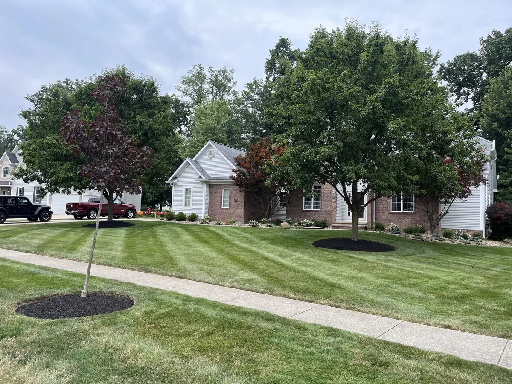

How commercial grounds and snow contracts actually work here, how they are priced, and the questions that separate a real vendor from a cheap bid.

Commercial grounds maintenance is a different product from residential lawn care, and property managers who hire it like residential work usually end up switching vendors within a year.
Here is what commercial service actually involves in Northeast Ohio, how contracts are structured, and what to ask before you sign one.
On a residential property, a missed week means the grass is long. On a commercial property, a missed week means a tenant complains, a prospective client forms an impression in the parking lot, and — in winter — somebody may slip.
That changes everything about how the work is scheduled and documented. Commercial service is built around being reliably done before it becomes a problem, not around being done eventually.
Trash policing is the line item most often left out of a cheap bid, and it is the one tenants notice fastest.
Residential plowing is about getting a car out. Commercial snow management is about a property being safe and open for business, which is a materially higher bar.
That last point matters more than most people realize. In a slip-and-fall claim, the question becomes what was done and when. A vendor who can produce timestamped service records is protecting you; one who cannot is exposing you.
Northeast Ohio adds a wrinkle: our lake-effect bands can drop several inches in a couple of hours over Geauga County while Portage County stays clear. Commercial contracts here need a trigger and a response time that reflect that reality, not a statewide average.
Fixed monthly. The full season's cost divided into equal payments. Predictable for budgeting, which is why most property managers prefer it.
Per-service. Billed per visit. More flexible, harder to budget, and it creates a small incentive to visit more often.
Annual with seasonal weighting. One number for the year, weighted toward the heavy months. Common on larger accounts.
For most small-to-midsize commercial properties — office buildings, medical offices, retail strips, churches, small industrial — fixed monthly is the cleanest structure for both sides.
Crew size is a fair question. A one-truck operation servicing eight commercial properties has a genuine problem when a storm hits or somebody calls off. We run a full crew, which is what makes committing to a fixed schedule realistic rather than aspirational.
We handle grounds maintenance and snow management for office buildings, retail plazas, medical and professional offices, churches, HOA common areas, and small industrial sites across Aurora, Chagrin Falls, Bainbridge, South Russell, Auburn Township, and Mantua.
Because we are based in Aurora and run routes across both Portage and Geauga County, commercial properties here get real response times — not a crew driving in from an hour away when a storm has already started.
See our property maintenance and snow removal pages for scope details, or reach out for a walkthrough and written proposal.
Yes — lots, access drives, walkways, and entries, with ice control. Commercial snow runs on separate timing from residential because most properties need to be clear and treated before opening, and we document service times for your records.
Most commonly as a fixed monthly rate covering the full scope for the season, which makes budgeting predictable. Per-service and annual weighted structures are also available. Pricing depends on turf area, bed footage, obstacle density, and how much trash policing the site needs.
Office buildings, retail plazas, medical and professional offices, churches, HOA common areas, and small industrial sites. We are a local crew based in Aurora, which fits small-to-midsize properties across Portage and Geauga County well.
Insurance documentation is available on request. Most commercial property managers and HOA boards require a certificate naming their entity before work begins, and we handle that during the proposal stage.
Grounds maintenance and snow management for offices, retail, medical, churches, and HOAs across Portage and Geauga County. Walkthrough and written proposal.
Request a Commercial Quote